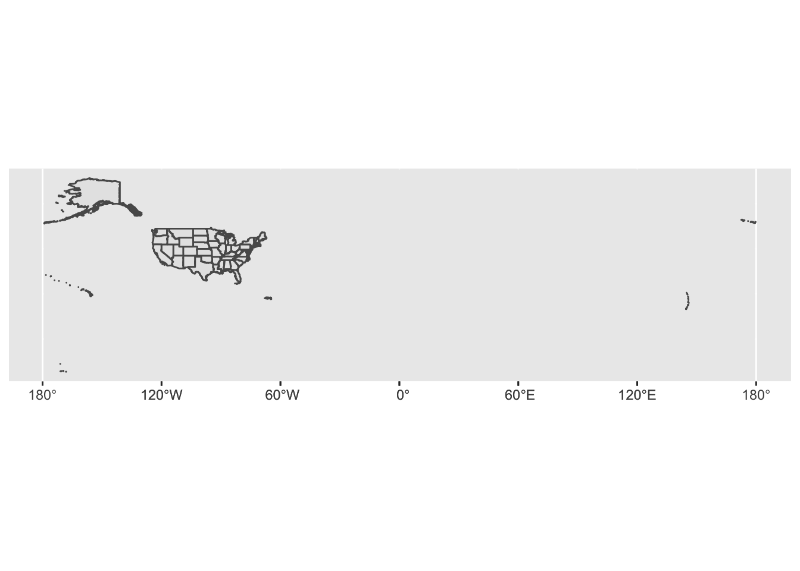
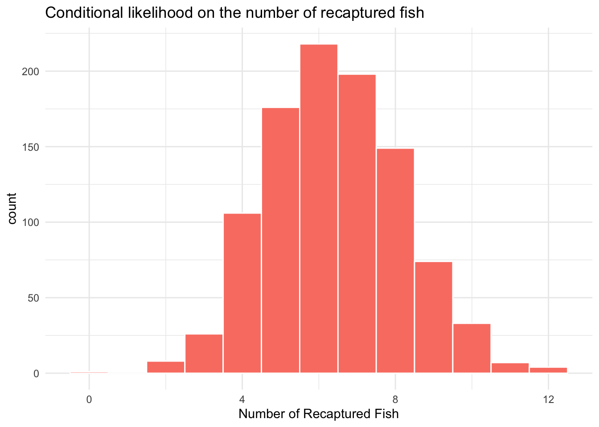

Thursday, August 25, 2022
Today
Data science: reproducibility, communication, and automation
Structure of markdown files
How to make a simple plot
Everything you create is an object
Turn off your camera.
Any questions about my grading of your assignments?
Make sure (1) you are watching (or at least listening) to me via Zoom, and (2) you have a copy of
02_Lessonproject and have the02-Lesson.Rmdfile open.Follow along in your copy of the lesson as I go line by line through the file on Zoom.
Your files background and text might look different. Is it? If so, got to Tools > Global Options > Appearance > Cobalt
Much of the lesson materials come from online books: https://www.bigbookofr.com/index.html
Datasets: https://kieranhealy.org/blog/archives/2020/08/25/some-data-packages/
Data Analysis
Data analytics are done on a computer. You have two choices: use a spreadsheet or write code.
A spreadsheet is convenient, but they make the three conditions for a good data analysis reproducibility, communication, and automation difficult to achieve.
Reproducibility
A scientific paper is advertisement for a claim. But the proof is the procedure that was used to obtain the result.

If your analysis is to be convincing, the trail from the data you started with to the final output must be available to the public. A reproducible trail with a spreadsheet is hard. It is easy to make mistakes (e.g., accidentally sorting just a column rather than the entire table).
A set of instructions written as computer code is the exact procedure. (Open stronger-hur.Rmd).
Communication
Code is a recipe for what you did. It communicates precisely what was done. Communication to others and to your future self.
It’s hard to explain to someone precisely what you did when working with a spreadsheet. Click here, then right click here, then choose menu X, etc. The words needed to describe these procedures are not standard. Code is an efficient way to communicate because all important information is given as plain text with no ambiguity.
Automation
If you’ve ever made a map using a geographic information system (GIS) you know how hard it is to make another one with a new set of data (even a very similar one). Running code with new data is simple.
Being able to code is an important skill for nearly all technical jobs. Here you will learn how to code. But keep in mind: Just like learning to write doesn’t mean you will be a writer (i.e., make a living writing), learning to code doesn’t mean you will be a coder.
The R programming language
- R is a leading open source programming language for data science. R and Python.
- Free, open-source, runs on Windows, Macs, etc. Excellent graphing capabilities. Powerful, extensible, and relatively easy to learn syntax. Thousands of functions.
- Has all the cutting edge statistical methods including methods in spatial statistics.
- Used by scientists of all stripes. Most of the world’s statisticians use it (and contribute to it).
Overview of this course
We start with making graphs. You will make clear, informative plots that will help you understand your data. You will learn the basic structure of a making a plot.
Visualization alone is not enough, so you will also learn the key verbs that allow you to select important variables, filter out key observations, create new variables, and compute summaries (data wrangling).
You will then combine data wrangling and visualization with your curiosity to ask and answer interesting questions by learning how to fit models to your data. Data models extend your ability to ask and answer questions about the world you live in.
With geographic and environmental data collected at different locations these models will include a spatial component.
Work in plain text, using R Markdown
The ability to reproduce your work is important to a scientific process. It is also pragmatic. The person most likely to reproduce your work a few months later is you.
This is especially true for graphs and figures. These often have a finished quality to them as a result of tweaking and adjustments to the details. This makes it hard to reproduce them later.
The goal is to do as much of this tweaking as possible with the code you write, rather than in a way that is invisible (retrospectively). Contrast editing an image in Adobe Illustrator.
You will find yourself constantly going back and forth between three things:
Writing code: You will write code to produce plots. You will also write code to load your data (get your data into R), to look quickly at tables of that data. Sometimes you will want to summarize, rearrange, subset, or augment your data, or fit a statistical model to it. You will want to be able to write that code as easily and effectively as possible.
Looking at output. Your code is a set of instructions that produces the output you want: a table, a model, or a figure. It is helpful to be able to see that output.
Taking notes. You will also write about what you are doing, and what your results mean.
To do these things efficiently you want to write your code together with comments. This is where markdown comes in (files that end with .Rmd)
An R markdown file is a plain text document where text (such as notes or discussion) is interspersed with pieces, or chunks, of R code. When you Knit this file the R code is executed piece by piece, in sequence starting at the top of the file, and either supplementing or replacing the chunks of code with output.
The resulting file is then converted into a more easily-readable document formatted in HTML, PDF, or Word. The non-code segments of the document are plain text with simple formatting instructions (e.g., ## for section header).
There is a set of conventions for marking up plain text in a way that indicates how it should be formatted. Markdown treats text surrounded by asterisks, double asterisks, and backticks in special ways. It is R Markdown’s way of saying that these words are in
- italics
- also italics
- bold, and
code font
Your class notes include code. There is a set format for including code into your markdown file (lines of code; code chunk). They look like this:
library(ggplot2)I call these markings code chunk delimiters.
Three back ticks (on a U.S. keyboard, the character under the escape key) followed by a pair of curly braces containing the name of the language you are using. The format is language-agnostic and can be used with, e.g. Python and other languages.
The back ticks-and-braces signals that what follows is code. You write your code as needed, and then end the chunk with a new line containing three more back ticks.
If you keep your notes in this way, you will be able to see the code you wrote, the output it produces, and your own commentary or clarification on what the code did, all in a convenient way. Moreover, you can turn it into a good-looking document straight away with the Knit button.
This is how you will do everything in this course. In the end you will have a set of notes that you can turn into a book with bookdown.
Visualizing data
To help motivate your interest in this course, we start by making a graph. There are three things to learn:
- How to create graphs with a reusable {ggplot2} template
- How to add variables to a graph with aesthetics
- How to select the ‘type’ of your graph with geoms
The following examples are taken from R for Data Science by Hadley Wickham and Garrett Grolemund, published by O’Reilly Media, Inc., 2016, ISBN: 9781491910399. https://r4ds.had.co.nz/.
A code template
Let’s begin with a question to explore.
What do you think: Do cars with big engines use more fuel than cars with small engines?
- A: Cars with bigger engines use more fuel.
- B: Cars with bigger engines use less fuel.
You check your answer with two things: the mpg data that comes in {ggplot2} and a plot. The mpg object contains observations collected on 38 models of cars by the US Environmental Protection Agency. Among the variables in mpg are:
displ, a car’s engine size, in liters.hwy, a car’s fuel efficiency on the highway, in miles per gallon (mpg).
A car with a low fuel efficiency consumes more fuel than a car with a high fuel efficiency when they travel the same distance.
To see a portion of the mpg data, type mpg after you loaded the package using the library() function.
library(ggplot2)
mpg## # A tibble: 234 × 11
## manufacturer model displ year cyl trans drv cty hwy fl class
## <chr> <chr> <dbl> <int> <int> <chr> <chr> <int> <int> <chr> <chr>
## 1 audi a4 1.8 1999 4 auto… f 18 29 p comp…
## 2 audi a4 1.8 1999 4 manu… f 21 29 p comp…
## 3 audi a4 2 2008 4 manu… f 20 31 p comp…
## 4 audi a4 2 2008 4 auto… f 21 30 p comp…
## 5 audi a4 2.8 1999 6 auto… f 16 26 p comp…
## 6 audi a4 2.8 1999 6 manu… f 18 26 p comp…
## 7 audi a4 3.1 2008 6 auto… f 18 27 p comp…
## 8 audi a4 quattro 1.8 1999 4 manu… 4 18 26 p comp…
## 9 audi a4 quattro 1.8 1999 4 auto… 4 16 25 p comp…
## 10 audi a4 quattro 2 2008 4 manu… 4 20 28 p comp…
## # … with 224 more rowsYou see the first 10 rows and 10 columns of the data. Note that there are 234 rows and 11 columns so you are only viewing a portion of this spreadsheet.
Each row is a different car. The first row is the Audi A4 1999 model with automatic transmission (5 gears). The tenth car listed is the Audi A4 Quattro with manual transmission (6 gears).
The column labeled displ is the engine size in liters. Bigger number means the car has a larger engine. The column labeled hwy is the miles per gallon. Bigger number means the car uses more fuel to go the same distance (lower efficiency).
It is hard to check which answer is correct by looking only at these 10 cars. Note that bigger engines appear to have smaller values of highway mileage but it is far from clear.
You want to look at all 234 cars.
The code below uses functions from the {ggplot2} package to plot the relationship between displ and hwy for all cars.
Let’s look at the plot and then talk about the code itself. To see the plot, click on the little green triangle in the upper right corner of the gray shaded region.
ggplot(data = mpg) +
geom_point(mapping = aes(x = displ, y = hwy))
The plot shows an inverse relationship between engine size (displ) and fuel efficiency (hwy). Each point is a different car. Cars that have a large value of displ tend to have a small value of hwy and cars with a small value of displ tend to have a large value of hwy.
In other words, cars with big engines use more fuel. If that was your hypothesis, you were right!
Now let’s look at how you made the plot.
The code
Here’s the code used to make the plot. Notice that it contains three functions: ggplot(), geom_point(), and aes().
ggplot(data = mpg) +
geom_point(mapping = aes(x = displ, y = hwy))The first function, ggplot(), creates a coordinate system that you can add layers to. The first argument of ggplot() is the dataset to use in the graph.
By itself, ggplot(data = mpg) creates an empty graph, but it is not very interesting so I’m not going to show it here.
The function geom_point() adds a layer of points to the empty plot created by ggplot(). As a result, you get a scatterplot.
The function geom_point() takes a mapping argument, which defines which variables in your dataset are mapped to which axes in your graph. The mapping argument is always paired with the function aes(), which you use to bring together the mappings you want to create.
Here, you want to map the displ variable to the x axis (horizontal axis) and the hwy variable to the y axis (vertical axis), so you add x = displ and y = hwy inside of aes() (and you separate them with a comma). Where will ggplot() look for these mapped variables? In the data frame that you passed to the data argument, in this case, mpg.
- Knit to generate HTML.
- Compare the HTML with the Rmd.
A graphing workflow
The code above follows the common work flow for making graphs. To make a graph, you:
- Start the graph with
ggplot() - Add elements to the graph with a
geom_function - Select variables with the
mapping = aes()argument
A graphing template
In fact, you can turn your code into a reusable template for making graphs. To make a graph, replace the bracketed sections in the code below with a data set, a geom_ function, or a collection of mappings.
Give it a try!
- Copy and paste the above code chunk, including the code chunk delimiters, and replace the
y = hwywithy = cty.
ggplot(data = mpg) +
geom_point(mapping = aes(x = displ, y = cty))
- Replace the bracketed sections
< >withmpg,geom_boxplot, andx = class,y = hwyto make a slightly different graph.
ggplot(data = mpg) +
geom_boxplot(mapping = aes(x = class, y = hwy))Common problems
As you start to work with R code, you are likely to run into problems. Don’t worry — it happens to everyone. I’ve been writing R code for decades, and I still write code that doesn’t work!
Start by comparing the code that you are running to the code in the examples in these notes. R is extremely picky, and a misplaced character can make all the difference. Make sure that every ( is matched with a ) and every " is paired with another ". Also pay attention to capitalization; R is case sensitive.
location of the + sign
One common problem when creating {ggplot2} graphics is to put the + in the wrong place: it must come at the end of a line, not the start. In other words, make sure you haven’t accidentally written code like this:
ggplot(data = mpg)
+ geom_point(mapping = aes(x = displ, y = hwy))help
If you’re still stuck, try the help. You can get help about any R function by running ?function_name in a code chunk, e.g. ?geom_point. Don’t worry if the help doesn’t seem that helpful — instead skip down to the bottom of the help page and look for a code example that matches what you’re trying to do.
If that doesn’t help, carefully read the error message that appears when you run your (non-working) code. Sometimes the answer will be buried there! But when you’re new to R, you might not yet know how to understand the error message. Another great tool is Google: try googling the error message, as it’s likely someone else has had the same problem, and has gotten help online.
Things to know
You are getting oriented to the language itself (what happens at the console), while learning to take notes in what might seem like an odd format (chunks of code interspersed with plain-text comments), in an IDE (integrated development environment) that that has many features designed to make your life easier in the long run, but which can be hard to decipher at the beginning. Here are some general points to keep in mind about how R is designed. They might help you get a feel for how the language works.
Everything has a name
In R, everything you deal with has a name. You refer to things by their names as you examine, use, or modify them. Named entities include variables (like x, or y), data that you have loaded (like my_data), and functions that you use. (More about functions soon.) You will spend a lot of time talking about, creating, referring to, and modifying things with names.
Things are listed under the Environment tab in the upper right panel.
Some names are forbidden. These include reserved words like FALSE and TRUE, core programming words like Inf, for, else, break, function, and words for special entities like NA and NaN. (These last two are codes designating missing data and “Not a Number,” respectively.) You probably won’t use these names by accident, but it’s good do know that they are not allowed.
Some names you should not use, even if they are technically permitted. These are mostly words that are already in use for objects or functions that form part of the core of R. These include the names of basic functions like q() or c(), common statistical functions like mean(), range() or var(), and built-in mathematical constants like pi.
Names in R are case sensitive. The object my_data is not the same as the object My_Data. When choosing names for things, be concise, consistent, and informative. Follow the style of the tidyverse and name things in lower case, separating words with the underscore character, _, as needed. Do not use spaces when naming things, including variables in your data.
Everything is an object
Some objects are part of R, some are added via packages, and some are created by you. But almost everything is some kind of object. The code you write will create, manipulate, and use named objects.
Let’s create a vector of numbers. The command c() is a function. It’s short for “combine” or “concatenate.” It will take a sequence of comma-separated things inside the parentheses and join them into a vector where each element is still accessible.
c(1, 2, 3, 1, 3, 5, 25)## [1] 1 2 3 1 3 5 25Instead of sending the result to the console, here you instead assign the result to an object.
my_numbers <- c(1, 2, 3, 1, 3, 5, 25)
your_numbers <- c(5, 31, 71, 1, 3, 21, 6)To see what you created, type the name of the object and hit return.
my_numbers## [1] 1 2 3 1 3 5 25Each of our numbers is still there, and can be accessed directly if you want. They are now just part of a new object, a vector, called my_numbers.
You create objects by assigning them to names. The assignment operator is <-. Think of assignment as the verb “gets,” reading left to right. So, the bit of code above is read as “The object my_numbers gets the result of concatenating the following numbers: 1, 2, …”
The operator is two separate keys on your keyboard: the < key and the - (minus) key. When you create objects by assigning things to names, they come into existence in R’s workspace or environment.
You do things using functions
You do almost everything in R using functions. Think of a function as a special kind of object that can perform actions for you. It produces output based on the input that it receives. Like a good dog, when you want a function to do something, you call it. Somewhat less like a dog, it will reliably do what you tell it.
You give the function some information, it acts on that information, and some results come out the other side. Functions can be recognized by the parentheses at the end of their names. This distinguishes them from other objects, such as single numbers, named vectors, tables of data, and so on.
You send information to the function between the parentheses. Most functions accept at least one argument. A function’s arguments are the things it needs to know in order to do something. They can be some bit of your data (data = my_numbers), or specific instructions (title = "GDP per Capita"), or an option you want to choose (smoothing = "splines", show = FALSE).
For example, the object my_numbers is a numeric vector:
my_numbers## [1] 1 2 3 1 3 5 25But the thing you used to create it, c(), is a function. It combines the items into a vector composed of the series of comma-separated elements you give it. Similarly, mean() is a function that calculates a simple average for a vector of numbers. What happens if you just type mean() without any arguments inside the parentheses?
mean()The error message is terse but informative. The function needs an argument to work, and you haven’t given it one. In this case, ‘x,’ the name of another object that mean() can perform its calculation on:
mean(x = my_numbers)## [1] 5.714286Or
mean(x = your_numbers)## [1] 19.71429While the function arguments have names that are used internally, (here, x =), you don’t strictly need to specify the name for the function to work:
mean(my_numbers)## [1] 5.714286If you omit the name of the argument, R will just assume you are giving the function what it needs, and in some order. The documentation for a function will tell you what the order of required arguments is for any particular function.
For simple functions that only require one or two arguments, omitting their names is usually not confusing. For more complex functions, you will typically want to use the names of the arguments rather than try to remember what the ordering is.
In general, when providing arguments to a function the syntax is <argument> = <value>. If <value> is a named object that already exists in your workspace, like a vector of numbers of a table of data, then you provide it unquoted, as in mean(my_numbers). If <value> is not an object, a number, or a logical value like TRUE, then you usually put it in quotes, e.g., labels(x = "X Axis Label").
Functions take inputs via their arguments, do something, and return outputs. What the output is depends on what the function does. The c() function takes a sequence of comma-separated elements and returns a vector consisting of those same elements. The mean() function takes a vector of numbers and returns a single number, their average.
Functions can return far more than single numbers. The output returned by functions can be a table of data, or a complex object such as the results of a linear model, or the instructions needed to draw a plot. They can even be other functions. For example, the summary() function performs a series of calculations on a vector and produces what is in effect a little table with named elements.
A function’s argument names are internal to that function. Say you have created an object in your environment named x, for example. A function like mean() also has a named argument, x, but R will not get confused by this. It will not use your x object by mistake.
As you have already seen with c() and mean(), you can assign the result of a function to an object:
my_summary <- summary(my_numbers)When you do this, there’s no output to the console. R just puts the results into the new object, as you instructed. To look inside the object you can type its name and hit return:
my_summary## Min. 1st Qu. Median Mean 3rd Qu. Max.
## 1.000 1.500 3.000 5.714 4.000 25.000Functions come in packages (libraries)
The code you write will be more or less complex depending on the task you want to accomplish. Families of useful functions are bundled into packages that you can install, load into your R session, and make use of as you work.
Packages save you from reinventing the wheel. They make it so that you do not, for example, have to figure out how to write code from scratch to draw a shape on screen, or load a data file into memory.
Packages are also what allow you to build on the efforts of others in order to do your own work. {ggplot2} is a package of functions.
There are many other such packages and you will make use of several throughout this course, either by loading them with the library() function, or “reaching in” to them and pulling a useful function from them directly.
All of the work you will do this semester will involve choosing the right function or functions, and then giving those functions the right instructions through a series of named arguments.
Most of the mistakes you will make, and the errors you will fix, will involve having not picked the right function, or having not fed the function the right arguments, or having failed to provide information in a form the function can understand.
For now, just remember that you do things in R by creating and manipulating named objects. You manipulate objects by feeding information about them to functions. The functions do something useful with that information (calculate a mean, re-code a variable, fit a model) and give you the results back.
Try these out.
table(my_numbers)## my_numbers
## 1 2 3 5 25
## 2 1 2 1 1sd(my_numbers)## [1] 8.616153my_numbers * 5## [1] 5 10 15 5 15 25 125my_numbers + 1## [1] 2 3 4 2 4 6 26my_numbers + my_numbers## [1] 2 4 6 2 6 10 50The first two functions here gave us a simple table of counts and calculated the standard deviation of my_numbers.
It’s worth noticing what R did in the last three cases. First you multiplied my_numbers by two. R interprets that as you asking it to take each element of my_numbers one at a time and multiply it by five. It does the same with the instruction my_numbers + 1. The single value is “recycled” down the length of the vector.
By contrast, in the last case we add my_numbers to itself. Because the two objects being added are the same length, R adds each element in the first vector to the corresponding element in the second vector.
Your turn
Create a code chunk to compute the coefficient of variation (standard deviation divided by the mean) for your numbers (my_numbers).